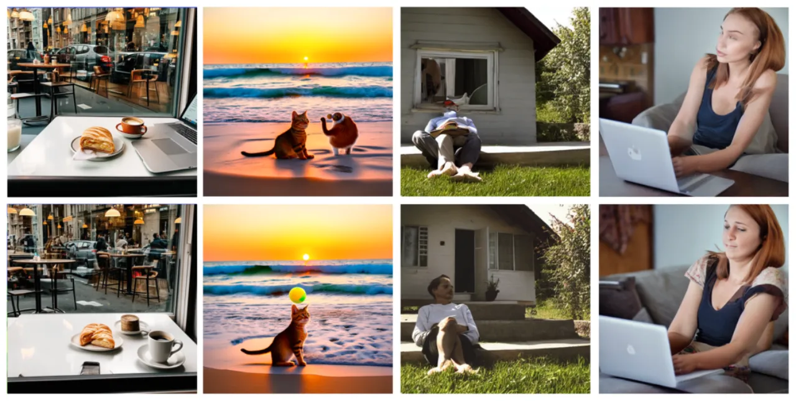
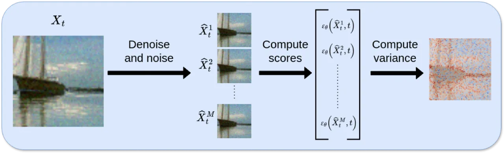
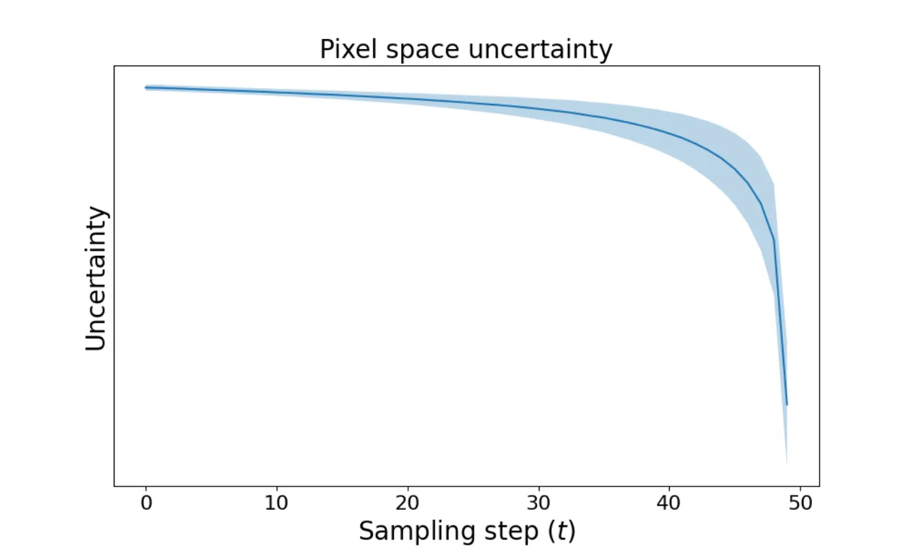
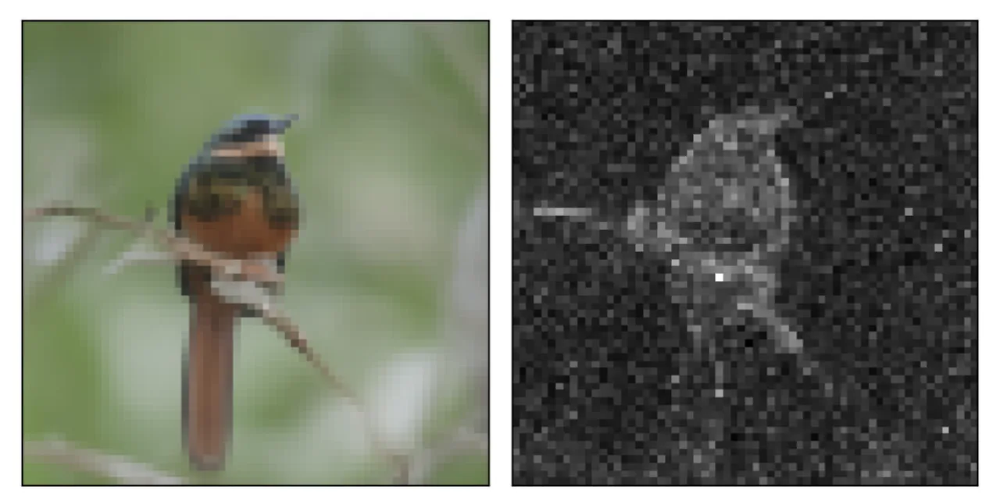
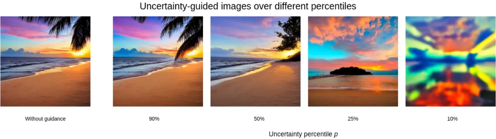

扩散模型能够生成高质量图像，但缺乏对生成样本质量的定量评估手段。本文提出一种无需训练的方法，在采样每一步估计逐像素的 aleatoric uncertainty，并将其作为引导信号，在 ImageNet 和 CIFAR-10 上以更少的函数评估次数（NFEs）改善 FID，同时可用于过滤低质量样本。
扩散模型在图像生成领域取得了显著进展，但生成样本的质量良莠不齐，且缺乏量化评估手段。 在安全敏感应用（如医学影像、自动驾驶）中，理解并量化生成样本的不确定性至关重要。 现有不确定性方法（如 MC Dropout、集成方法）计算代价高昂，或对模型结构有侵入性要求； 唯一面向扩散模型的逐像素方法 BayesDiff 需要显著的额外计算开销，且未将不确定性用于引导生成。
"understanding and quantifying the uncertainty associated with generated samples is crucial for ensuring the quality of the data"

方法核心是：在每个采样步骤 t，先从当前带噪样本 Xt 近似预测干净图像 X̂0， 再利用扩散模型正向过程的加噪分布对 X̂0 进行 M 次微扰，得到多个噪声变体， 最终以这些变体预测分数的方差作为逐像素 aleatoric uncertainty 的代理估计。 所得不确定性图可用于两个下游任务：过滤低质量样本（uncertainty filtering），以及引导采样（uncertainty guided sampling）。

首先，从当前步 Xt 近似重建干净图像：
X̂0 = (Xt − √(1−ᾱt) εθ(Xt, t)) / √ᾱt
接着对 X̂0 施加扩散正向加噪，得到 M 个噪声变体 {X̂ti}， 对每个变体运行去噪网络得到分数估计 Et，不确定性图定义为：
Ut = diag((Et − Ēt)T(Et − Ēt))
理论上，该估计近似于加噪分布的 Fisher information（对数似然的二阶导数的负期望）， 从而为不确定性估计赋予了信息几何学意义。
利用不确定性图对分数估计进行梯度修正：高不确定性像素（超过分位阈值 p 的区域） 通过梯度更新 ∂Ut/∂εt 引导噪声预测修正，更新强度由超参数 λ 控制：
ε̂t = εt + λ · (I[Ut > p] · ∂Ut/∂εt)
该操作在每个采样步骤插入，鼓励模型降低高不确定性区域的分数估计方差，从而产生质量更高的样本。

在 ImageNet（64×64、128×128、256×256、512×512）和 CIFAR-10 上评估， 使用模型：ADM（ImageNet64/128）、U-ViT（ImageNet256/512）、DDPM（CIFAR-10）。 评估指标：FID（图像质量）、AUSE（不确定性校准，越低越好）、AURG（越高越好）。
从 60,000 张生成图像中按不确定性排序，过滤高不确定性样本后重新计算 FID。
| 模型 | 数据集 | Random（基线） | Ours | BayesDiff | MC-Dropout |
|---|---|---|---|---|---|
| ADM | ImageNet64 | 3.289 | 3.254 | — | 3.268 |
| ADM | ImageNet128 | 8.21 | 7.88 | 8.45 | — |
| ADM w/2-DPM | ImageNet128 | 8.50 | 8.48 | 9.67 | — |
| U-ViT | ImageNet256 | 7.88 | 7.80 | 6.81 | — |
| U-ViT | ImageNet512 | 16.47 | 16.37 | 16.87 | — |
| DDPM | CIFAR-10 | 13.494 | 13.416 | — | 13.435 |
注： 在 ImageNet256 上 BayesDiff 取得了更好的 FID（6.81 vs 7.80），本文方法略逊一筹， 但本文方法仅需 20 NFEs，而 BayesDiff 需要 130 NFEs（高出约 6.5×）。
在标准采样流程中插入不确定性引导更新，生成 10,000 张图像后比较 FID。
| 模型 | 数据集 | Normal 采样 | Uncertainty-Guided | ΔFID |
|---|---|---|---|---|
| ADM | ImageNet64 | 24.16 | 23.21 | −0.95 |
| ADM | ImageNet128 | 45.10 | 44.02 | −1.08 |
| DDPM | CIFAR-10 | 27.39 | 26.45 | −0.94 |
| U-ViT | ImageNet256 | 51.45 | 50.34 | −1.11 |
| U-ViT | ImageNet512 | 60.72 | 59.81 | −0.91 |
| 数据集 | 指标 | Our Method | MC-Dropout |
|---|---|---|---|
| ImageNet64 | AUSE ↓ / AURG ↑ | 74.48 / 5.05 | 84.94 / −4.85 |
| CIFAR-10 | AUSE ↓ / AURG ↑ | 0.01 / 18.48 | 1.27 / 16.19 |

作者对分位阈值 p（percentile）和引导强度 λ 进行了超参数扫描。 结果表明：p 在 75–90 分位附近、λ 在较小范围内时效果最稳定。 M（扰动次数）的选择在计算效率与校准精度之间存在权衡： 更大的 M 在 CIFAR-10 和 ImageNet64 上带来边际收益，但增加了计算开销。

在 ImageNet256 的不确定性过滤实验中，本文方法的 FID 为 7.80，而 BayesDiff 达到 6.81——低于本文方法。 作者在实验结果中明确列出了这一数据，并未回避。这表明在较大分辨率的过滤任务上，本文方法尚有提升空间。
方法引入两个超参数：分位阈值 p（决定哪些像素被引导）和更新强度 λ。 消融实验表明不同数据集/模型下最优值不同，需要在实际部署时针对具体设置进行调整， 降低了"开箱即用"的便捷性。
indicator function I[Ut > p] 限定了梯度更新仅在超过阈值的像素上生效， 对于不确定性分布较均匀（全图不确定性相近）的样本，引导效果可能有限。